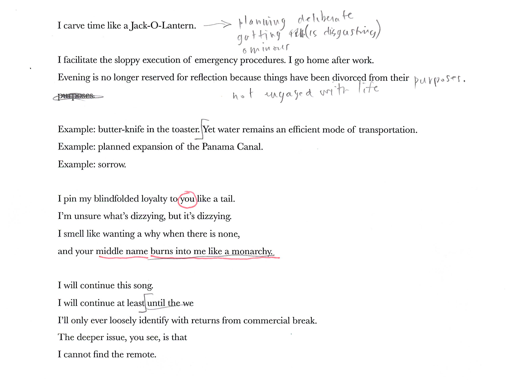
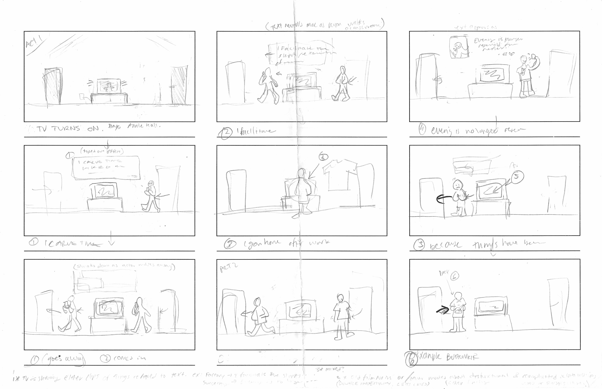
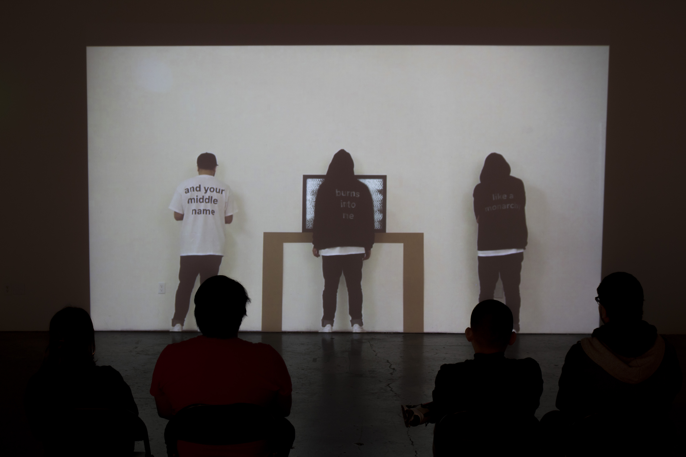

I CARVE TIME LIKE A JACK-O-LANTERN
Installation, Video
I Carve Time Like a Jack-O-Lantern was an installation that explored the idea of an inability to break from our own habits. We can sometimes be stuck in a loop and not even notice it, and when we do start to notice we don’t have the power to break from the routine.
PROCESS
The process for this project was very interesting. what starte out in my mind as a erformance piece, ended up becoming a projection installation of myself as the sole actor. In making this project I learned about video editing and also how to make cheap T-shirts.


